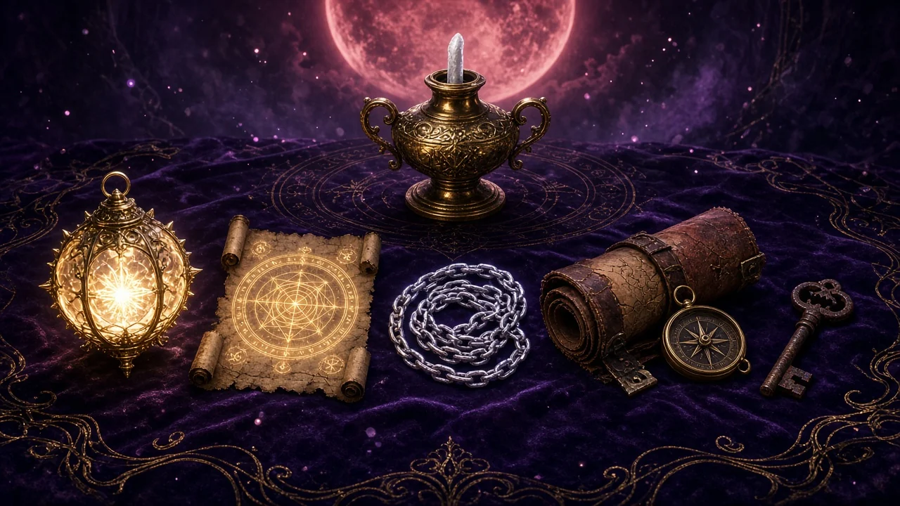

❖ 당신은
다른 세계에서 넘어왔어도, 이 대륙 사람이어도 돼요. 이름, 나이(20세 이상), 능력은 직접 정해요.

━━ ❖ ━━
이 네 칸이면 시작할 수 있어요
1월 1일, 당신은 대륙 에스테라에서 눈을 떠요. 12월 31일 밤 북쪽 숲의 돌문이 열리고, 마계 군대가 넘어와요.
300년 전 일이라 다들 동화로만 알아요.
다른 세계에서 넘어왔어도, 이 대륙 사람이어도 돼요. 이름, 나이(20세 이상), 능력은 직접 정해요.
왕은 힘이 약하고, 다섯 세력이 나라를 나눠 쥐고 있어요. 순위는 매년 7월 서열전으로 정해요.
공을 세우고, 다른 세력 인물을 데려오고, 봉인 조각을 모으고, 마음에 드는 사람과 사귀어요.
52명 누구와도 친해질 수 있어요. 인물 도감에서 전신 그림과 소개를 볼 수 있어요.
━━ ❖ ━━
왕국 하나, 세력 다섯
가운데 왕도, 왼쪽 호수 위 마탑, 오른쪽 아래 카르셀 항, 위쪽 숲에 문이 있어요.

칼리고 문. 12월 31일 밤에 열리고 7일 뒤 닫혀요.

왼쪽부터 빛, 식, 사슬, 길, 열쇠. 위는 등잔이에요.
━━ ❖ ━━
전부 직접 골라요
━━ ❖ ━━
계절마다 큰일이 있어요
━━ ❖ ━━
시작할 세력을 골라요. 세력 밖에서 움직이는 셋도 있어요.
━━ ❖ ━━
세력으로 골라 보고, 카드를 눌러 전신과 소개를 열어요.